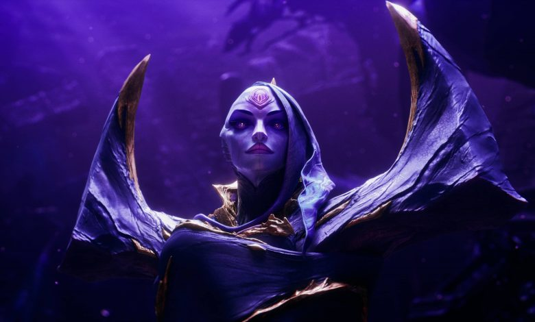
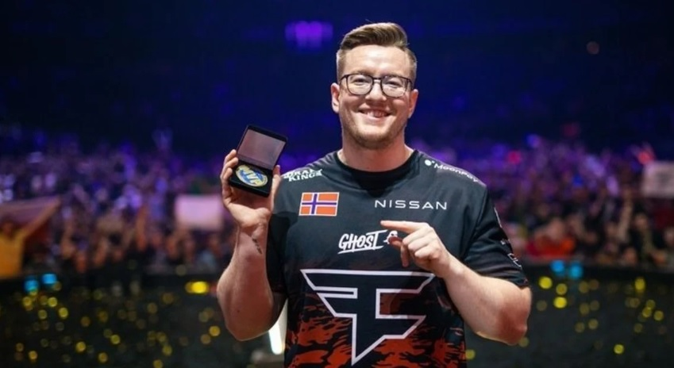

ULTIMAS NOTICIAS
Nuevo campeon de League of legends
Cada vez falta menos para la presentación oficial del nuevo campeón que Riot Games tiene preparado para League of Legends. Una nueva filtración nos hace conocer lo que sería principalmente el aspecto de Bel’Veth, la nueva campeona que se estima se desempeñará principalmente en la jungla de la Grieta del Invocador. El vídeo apenas dura un minuto y en él solo vemos el momento en donde Bel’Veth se retira a la base en dos de sus posibles formas. Cuatro años han pasado desde el lanzamiento del último campeón perteneciente a la región del Vacío. En marzo del 2018 Riot Games sacaba a la luz a Kai’Sa, la hija del Vacío. Ahora es el momento de conocer al campeón número 160, la Emperatriz del Vacío que «llenará el vacío de vuestros corazones”. Sin tener información oficial acerca del set de habilidades de la Emperatriz del Vacío, y según las filtraciones de Ryscu, la nueva campeona tendrá tres formar diferentes que irán evolucionando según vaya avanzando la partida. Algo parecido a las variaciones de Kyle
Faze clan se consagró campeón del mayor tras derrotar a Navi
Tras un debut con derrota ante ENCE, FaZe ganó todo el resto de las series, desde el Legends Stage hasta la final, con sólo un mapa perdido (en el 2-1 ante Copenhaguen Flames). Del otro lado estaba Navi, el favorito de siempre, el equipo de Oleksandr “s1mple” Kostyliev, los N°1 del mundo y campeones defensores, que mantuvieron un gran nivel en el torneo. Así y todo, en los momentos clave aparecieron los nervios, algo que FaZe Clan aprovechó en una serie que lo tuvo protagonista.
Desarrollo
Inferno fue el arranque de la gran final…¡y qué arranque para FaZe! Dominando cada duelo que disputaba, se puso en ventaja 8-0 antes de que Navi se acomodara y cierre la primera mitad con 10-5 a favor de FaZe. Dos rondas extras para ellos tras quedarse con el choque de pistolas y la siguiente. Y allí Navi cambió el chip y volvió al juego: de un 12-5 en contra a quedar 15-13 a favor, con doble match point para los ucranianos que FaZe logró salvar, llevando el primer mapa a Tiempo Extra. Durante la partida, el lituano Broky fue la figura (terminaría con 30 asesinatos) pero en el Tiempo Extra, Karrigan aceleró el tempo y tomó una posición más agresiva, un estilo más “ruso”. Así, FaZe lograría el primer punto con un 19-16. En el segundo mapa, Nuke, FaZe arrancaría de Anti-terrorista y haría notar la ventaja: una vez más, el arranque fue apabullante, con Rain brillando y robándose la escena; quedando 10-2 a favor antes de que Navi, otra vez, pueda acomodarse y cerrar 10-5 abajo. Casi calcado a Inferno, los ucranianos volvieron a encenderse y llevaron el partido a 12-10 (aún a favor de FaZe). A Navi no se lo vio cómodo en toda la serie y la energía de FaZe lo devoró. Cerraron en 16-10, con Rain rompiéndola con 30 asesinatos. Un torneo espectacular.